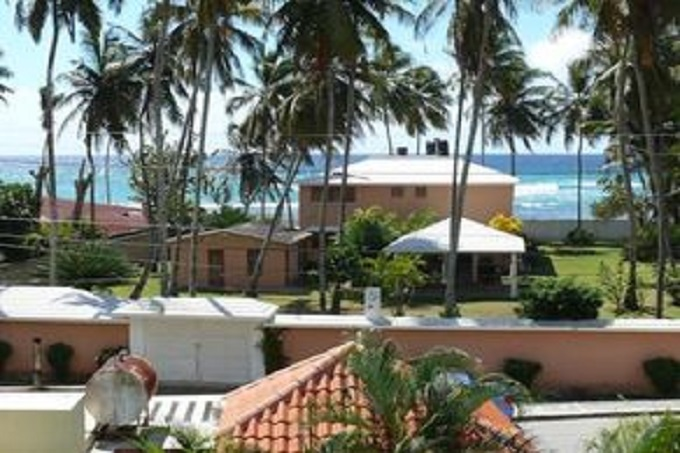
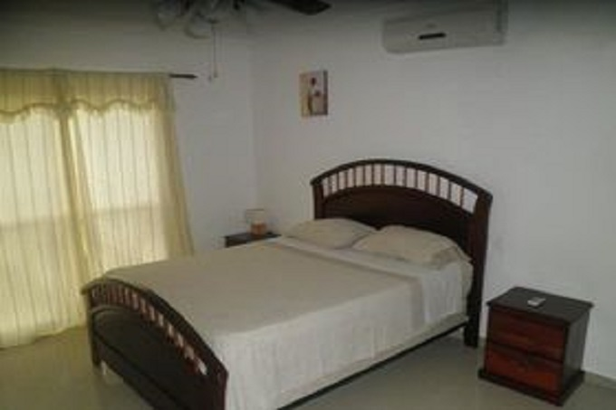
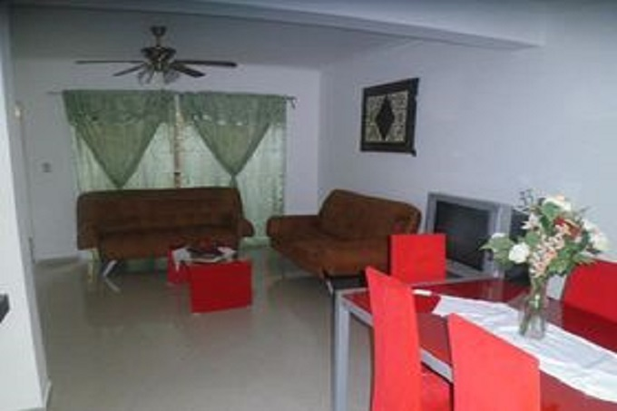
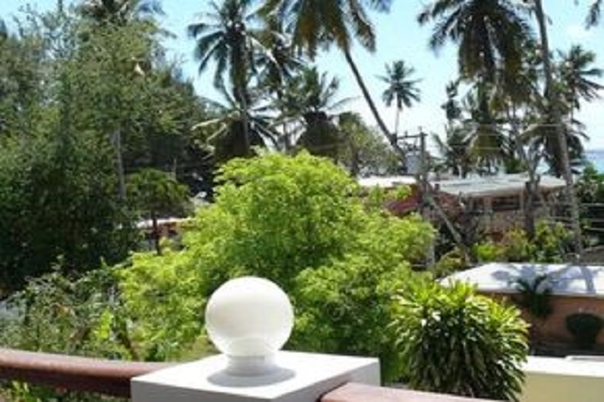

|  |
Es un complejo de 11 apartamentos de vacaciones para alquiler nombrado OASIS se encuentra a 80 metros
de la costa del Mar Caribe en el mismo centro del pueblo pesquero Guayacanes y cerca del balneario turístico Juan Dolio
en la costa sudeste de la República Dominicana.
La playa de arena semiparticular, flanqueada de palmeras de coco y protegida por arrecifes de coral que
es un de los más bellos en este región, se encuentra sólo a 150 metros de los apartamentos y es lo que representa una adecuada
elección para todos los que buscan descanso en la intimidad fuera de los centros turísticos. Pescadores o submarinistas también
hallan lo que buscan. Con vista de acceso libre al mar es este el lugar ideal también para las familias con niños.
|
 |
|  |
El establecimiento Apartamentos OASIS se encuentra en la segunda línea de la playa Juan Dolioy dispone de piscina al
aire libre y aparcamiento gratuito. También organiza distintas actividades, como excursiones a las islas Saona y Catalina. Los apartamento
incluye aire acondicionado, balcón, zona de estar, cocina completa con microondas y nevera y baño privado con ducha.
OASIS está cerca de varios restaurantes, como el club SCA, situado a 100 metros, o el Ristorante El Sueño, a 4 km.
También se encuentra a 500 metros de una tienda de una tienda de comestibles. El establecimiento está a 10 minutos del Parque Acuatico los Delfines, a 40 minutos en coche de la Zona Colonial y a 45 minutos también en coche de una gran variedad de centros comerciales.
El establecimiento está a 32,5 km del Aeropuerto Internacional de Las Américas, para el que ofrece un servicio de enlace por un suplemento.
|
 |